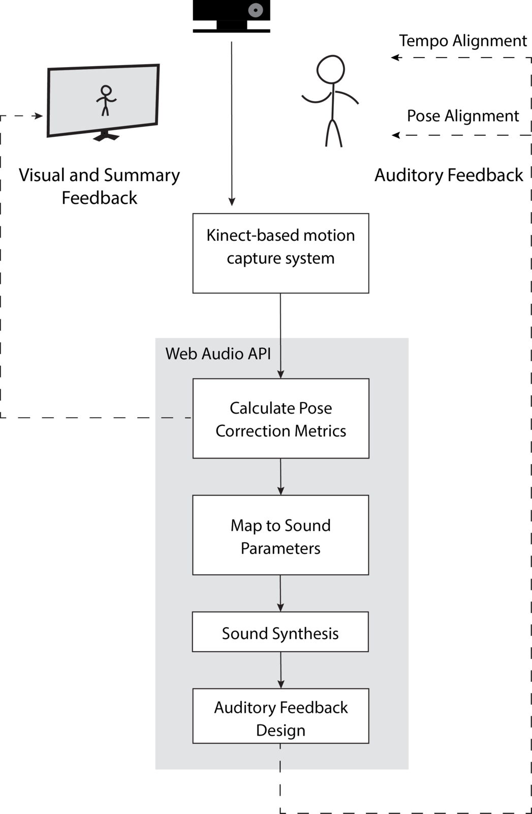
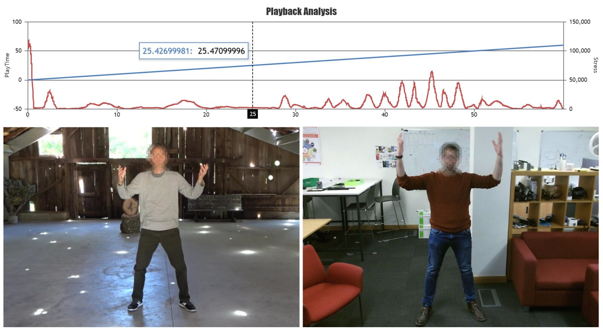
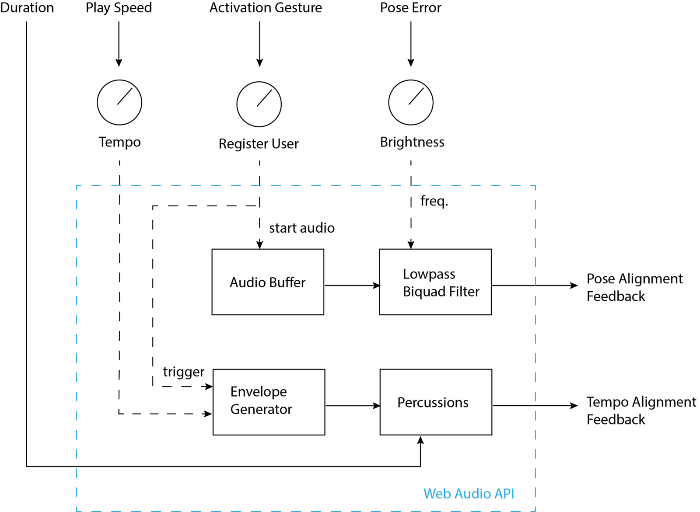
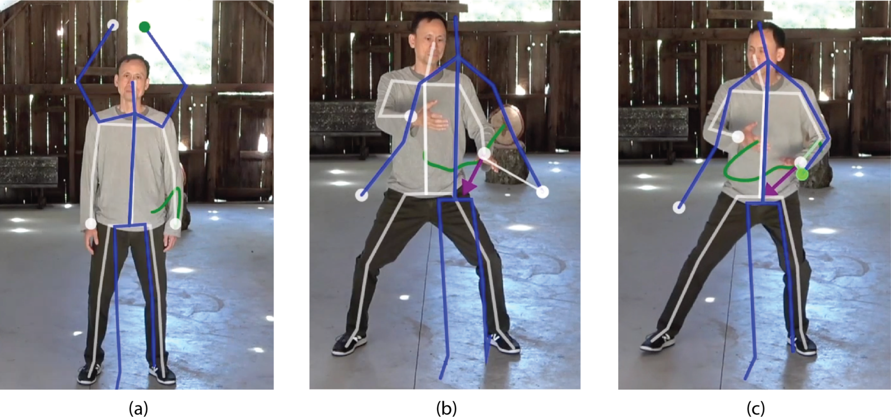

Reactive Video: Movement Sonification for Learning Physical Activity with Adaptive Video Playback
Abstract
This paper provides initial efforts in developing and evaluating a real-time movement sonification framework for physical activity practice and learning. Reactive Video provides an interactive, vision-based, adaptive video playback with auditory feedback on users' performance to better support when learning and practicing new physical skills. We implement the sonification for auditory feedback design by extending the Web Audio API framework. The current application focuses on Tai-Chi performance and provides two main audio cues to users for several Tai Chi exercises. We provide our design approach, implementation, and sound generation and mapping, specifically for interactive systems with direct video manipulation. Our observations reveal the relationship between the movement-to-sound mapping and characteristics of the physical activity.
Author Keywords
movement-based interaction, sonification, auditory feedback, physical activity, direct manipulation
CCS Concepts
•Human-centered computing→Activity centered design; Sound-based input/output;
•Applied computing→Sound and music computing
1. Introduction
This work discusses a movement sonification model for learning and practicing physical activity as part of the gesture-controlled video manipulation system, Reactive Video. Whole-body gestures are detected through a depth camera-based motion capture system and matched to the movements extracted from a target video. The sonification system is designed based on the pose metrics extracted from the pose estimation and adaptive video coupling. The current application focuses on Tai-Chi performance and extends it to different Tai Chi exercises.
In this paper, we will provide a brief overview of the Reactive Video system and focus on the sonification framework, design considerations for the auditory feedback mapping, and our observations of the user's interactions.
Background
Sonification of movement data has been widely explored, ranging from biosensory audification to assistive technology for aiding movement [1]. We extend the concept of providing auditory feedback based on movement data by discussing aesthetic considerations in sonification design in the context of supporting physical exercise learning and practice. Our work builds upon previous research on movement-based interaction both to develop bodily movement awareness and skills [2][3][4] and to emphasize the kinesthetic creativity [5], [6] and the first-person experience of the user and the designer [7]. We also focus on the prior work for auditory feedback design for assisting users to learn and practice physical activity with application ranges from interdisciplinary studies [8] to sports training [9][10] and physiotherapy [1][11][12][13][14][15].
Reactive Video System
Reactive Video (RV) adapts video's playback based on the user's movement. It provides real-time visual and summary feedback with a mirrored image mapped onto the instructor's movement (see Figure 2). Auditory feedback is designed to inform users and support their pose alignment relative to the instructor's movement. Figure 1 shows the system overview of the Reactive Video framework. More details about the adaptive video playback framework and implementation for Reactive Video can be found in [16].


Figure 1: System overview from Kinect-based motion capture to auditory feedback design.
The auditory feedback design focuses on two main pose metrics, pose error (mean average error of weighted sum of joints between two skeleton data) and play speed (ratio of playtime and elapsed real-time). It follows four modes: (1) Watch mode helps users familiarize themselves with the movement sequence, increasing the user's engagement with auditory feedback, (2) Imitate mode provides feedback on pose errors as users try to copy the sequence, (3) Learn mode provides adaptive playback control and the sonification in this mode guides the user to correct their overall pose error, tempo, and pose misalignment in real-time, and (4) Immerse mode provides both correction feedback and encourages users to explore the sonic affordances of the system.
Sonification Design
Design Approach
Inspired by musification-based frameworks, we focus on the use of musical material in movement-to-sound mapping, rather than direct auralization of movement data [17] [18]. Instead of directly generating sound output based on the data stream, the user's movement interaction affects the existing composition. The auditory cues are embedded in the composition and implicitly expressed. This approach drives our final design and aesthetic considerations, not only as a sonification model but also as a compositional act [19].
Another consideration in our approach is aesthetic accessibility. Considering the audience of Reactive Video, composed of mostly non-musically trained users with little or no practice in music-making, we consider users' musical expectations such as harmonicity, rhythmic structure, and dissonance/consonance [19]. As their movement deviates from the target, users receive changes in one of these three aspects.
Finally, our approach to movement-to-sound mapping is driven by the choice of physical activity. As the case study, we choose Tai Chi movements primarily because of their slow-moving, meditative, and reproducible exercises [20] as well as Tai Chi’s philosophical approach and an intentional level of mind-body connection [21]. Such characteristics motivate us to design non-intrusive auditory feedback with an accompanying soundscape rather than data-driven audification.


Figure 2: Summary feedback provides a comparison of the instructor and user videos side by side, showing two main movement metrics, playtime (blue) and pose error (red). These movement metrics are mapped to sound parameters for the sonification design.
Implementation
The sonification system is built using a Javascript client as an extension to the Reactive Video system [16], which uses a 2nd generation Microsoft Kinect sensor and connects with a NodeJS server sending pose information to the browser. The pose information (skeleton data) is extracted, filtered, and pose metrics are extracted to be used in two audio programs. The calculated pose metrics are sent to the main program for audio feedback. The pose metrics are mapped to the sound parameters to provide two main kinds of feedback: postural and temporal alignment.
The auditory feedback program is implemented as a web-based application using Web Audio API1 tools and extensions [22]. We developed two intermediate-layer audio toolboxes to interface with Reactive Video specific movement-to-sound mapping and sound generation, both of which are available in Reactive Video's open-source GitHub library2.
Sound Generation and Mapping
Both the adaptive playback and the movement sonification are initiated with specific body poses, activation gestures, in order to prevent the user from accidentally performing (see Figure 4), raising hands together above the head. This posture is designed to be different than the physical activity postures and simple enough to offer users explicit control. This gesture sends a start signal to the sound engines and resets the timeline . After registering the user, two main alignment feedback 3 are started, either individually or combined based on the selection of the user mode. Figure 3 shows the signal flow connecting the pose metrics to the sound generation parameters and the resulting alignment feedback.


Figure 3: The signal flow showing the mapping between pose metrics and auditory feedback.
Pose Alignment Feedback
Reactive Video's soundscape is composed of bell, chime, and wind sounds which naturally carry more high-frequency information in its spectrum. This soundscape is filtered through a lowpass biquad filter to provide pose accuracy information. The user's pose error relative to the instructor modifies the filter's quality factor and the cutoff frequency. The user perceives modulations in the spectral content and loudness.
The pose error is initially calculated as the distance of the tracked joints between the user and target positions and later smoothed by a moving average filter. A misalignment of the tracked joints outputs a high pose error. As high values decrease the filter's cutoff frequency (thus, the brightness), correctly aligned joints allow the soundscape's high-frequency rich spectrum to pass, increasing the brightness (See Figure 3). The changes in brightness shift users' attention to their pose alignment by reducing the audibility of the soundscape when the error increases 4.


Figure 4: Activation gesture (a) registers the user’s skeleton and matches with the instructor; misalignment with high pose error (b) at the threshold results in decoupling the anchored joint, correct alignment (c) recouples the user’s and instructor’s joints, giving low pose error values.
Tempo Alignment Feedback
The reference exercises in the Watch and Imitate modes have a preset velocity for the specific postures and flows. The user can practice the original tempo of the exercises in these modes. In the Learn mode, the user has control over the tempo of rhythmical auditory cues. Since the user can advance the video at their own speed, the performance time varies from the instructor's corresponding movement. As the difference between user's and instructor's playback speed is provided to the sonification system, the tempo of the percussion instruments is modified accordingly 5.
As the user improves their practice, auditory feedback provides more complex rhythmical structures. In Immerse mode, the user can practice increasing their exercise duration. The system triggers a new percussive instrument, following the user's movement tempo, as the user progress in time (see Figure 3). While this feedback provides users their overall progress, it can also be used as a compositional tool as part of the learning process.
Conclusion and Future Work
This initial sonification framework provided us useful insights for designing auditory feedback both for physical activity learning and an interactive system that facilitates adaptive video playback to mimic the user's movement. As future work to follow up our design and composition efforts, we plan to extend our provisional observations and collect user study responses on how auditory feedback affects users' pose accuracy, overall performance, and duration of the exercise. Similarly, a comparison of musification-based approach and direct sonification may reveal the effectiveness of different frameworks in assessing design considerations.
In Reactive Video, we provide a sonification framework that focuses on its movement-led learning capabilities, as much as its artistic uses. Inspired by a musification-based approach, our work presents the design considerations for an effective auditory feedback design that is facilitated by adaptive video playback and real-time sonification of pose metrics of coupled body movement.
Footnotes
- ↩
- ↩
An excerpt for both audio cues: https://youtu.be/WvZAZ5vywyk.
↩For pose alignment, please refer to this video excerpt: https://youtu.be/CfzI8a6bw0g.
↩For tempo alignment, please refer to this video excerpt: https://youtu.be/-Df7Q0Fqgg0.
↩
Citations
- ↩Hermann, T., Hunt, A., & Neuhoff, J. G. (2011). The sonification handbook. Logos Verlag Berlin, Germany.
- ↩Loke, L., & Robertson, T. (2013). Moving and making strange: An embodied approach to movement-based interaction design. ACM Transactions on Computer-Human Interaction (TOCHI), 20(1), 7.
- ↩Loke, L., Larssen, A. T., Robertson, T., & Edwards, J. (2007). Understanding movement for interaction design: frameworks and approaches. Personal and Ubiquitous Computing, 11(8), 691–701.
- ↩Levisohn, A., & Schiphorst, T. (2011). Embodied engagement: Supporting movement awareness in ubiquitous computing systems. Ubiquitous Learning: An International Journal, 3, 97–111.
- ↩Sheets-Johnstone, M. (2011). The primacy of movement (Vol. 82). John Benjamins Publishing.
- ↩Françoise, J., Candau, Y., Fdili Alaoui, S., & Schiphorst, T. (2017). Designing for kinesthetic awareness: Revealing user experiences through second-person inquiry. In Proceedings of the 2017 CHI Conference on Human Factors in Computing Systems (pp. 5171–5183).
- ↩Moen, J. (2005). Towards people based movement interaction and kinaesthetic interaction experiences. In Proceedings of the 4th decennial conference on Critical computing: between sense and sensibility (pp. 121–124).
- ↩Bevilacqua, F., Boyer, E. O., Françoise, J., Houix, O., Susini, P., Roby-Brami, A., & Hanneton, S. (2016). Sensori-motor learning with movement sonification: perspectives from recent interdisciplinary studies. Frontiers in Neuroscience, 10, 385.
- ↩Kleiman-Weiner, M., & Berger, J. (2006). The sound of one arm swinging: a model for multidimensional auditory display of physical motion.
- ↩Hermann, T., & Grunow, C. (2004). Sonification of Group Behavior for Analysis and Training of Sports Tactics. In in Proc. Int. Workshop of Interactive Sonification.
- ↩Pauletto, S., & Hunt, A. (2004). A toolkit for interactive sonification.
- ↩Effenberg, A. O., Fehse, U., Schmitz, G., Krueger, B., & Mechling, H. (2016). Movement sonification: effects on motor learning beyond rhythmic adjustments. Frontiers in Neuroscience, 10, 219.
- ↩Ripollés, P., Rojo, N., Grau-Sánchez, J., Amengual, J., Càmara, E., Marco-Pallarés, J., … others. (2016). Music supported therapy promotes motor plasticity in individuals with chronic stroke. Brain Imaging and Behavior, 10(4), 1289–1307.
- ↩Thaut, M. H. (2015). The discovery of human auditory–motor entrainment and its role in the development of neurologic music therapy. In Progress in brain research (Vol. 217, pp. 253–266). Elsevier.
- ↩Schiavio, A., & Altenmüller, E. (2015). Exploring music-based rehabilitation for Parkinsonism through embodied cognitive science. Frontiers in Neurology, 6, 217.
- ↩Clarke, C., Cavdir, D., Chiu, P., Denoue, L., & Kimber, D. (2020). Reactive Video: Adaptive Video Playback Based on User Motion for Supporting Physical Activity. In Proceedings of the 33rd Annual ACM Symposium on User Interface Software and Technology (pp. 196–208).
- ↩Gresham-Lancaster, S. (2012). Relationships of sonification to music and sound art. AI &society, 27(2), 207–212.
- ↩Straebel, V. (2010). The sonification metaphor in instrumental music and sonification’s romantic implications.
- ↩Williams, D. A. H. (2016). Utility versus creativity in biomedical musification. Journal of Creative Music Systems.
- ↩Li, F. (2014). Transforming traditional tai ji quan techniques into integrative movement therapy—Tai Ji Quan: Moving for Better Balance. Journal of Sport and Health Science, 3(1), 9–15.
- ↩Françoise, J., Roby-Brami, A., Riboud, N., & Bevilacqua, F. (2015). Movement sequence analysis using hidden Markov models: a case study in Tai Chi performance. In Proceedings of the 2nd International Workshop on Movement and Computing (pp. 29–36).
- ↩Mann, Y. (2015). Interactive music with tone. js. In Proceedings of the 1st annual Web Audio Conference.